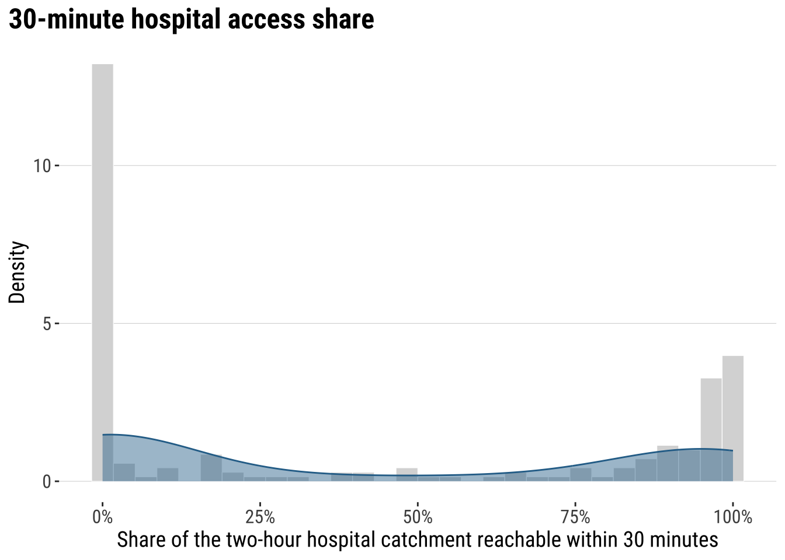
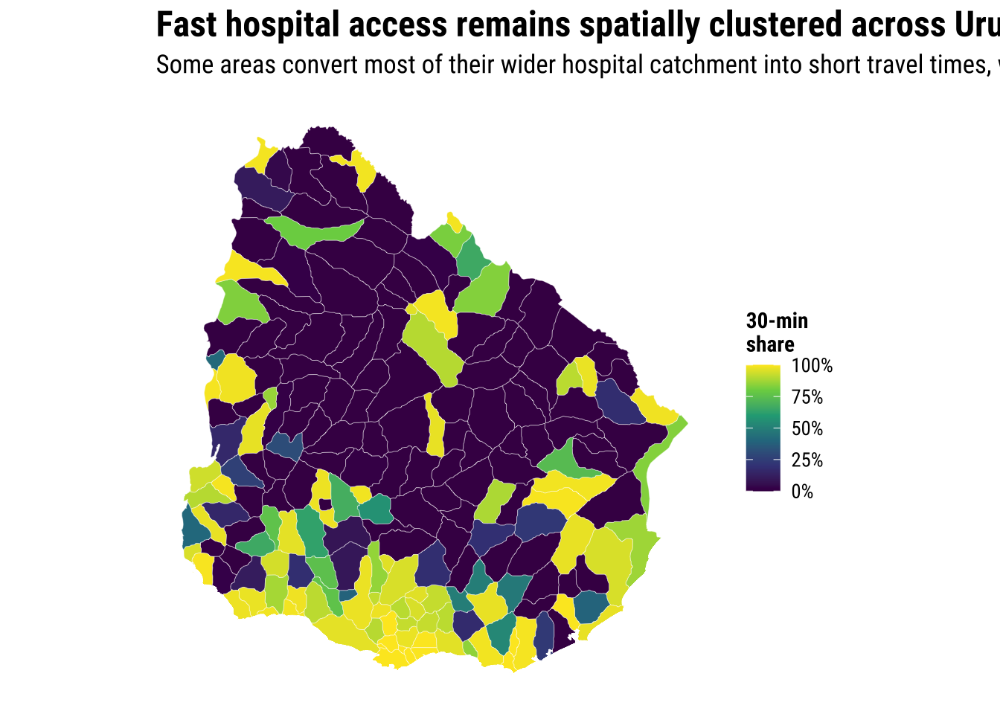
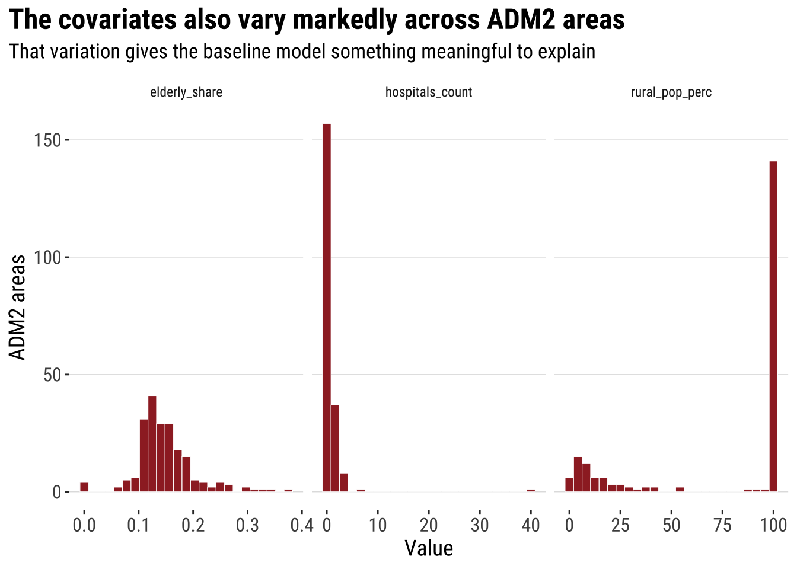
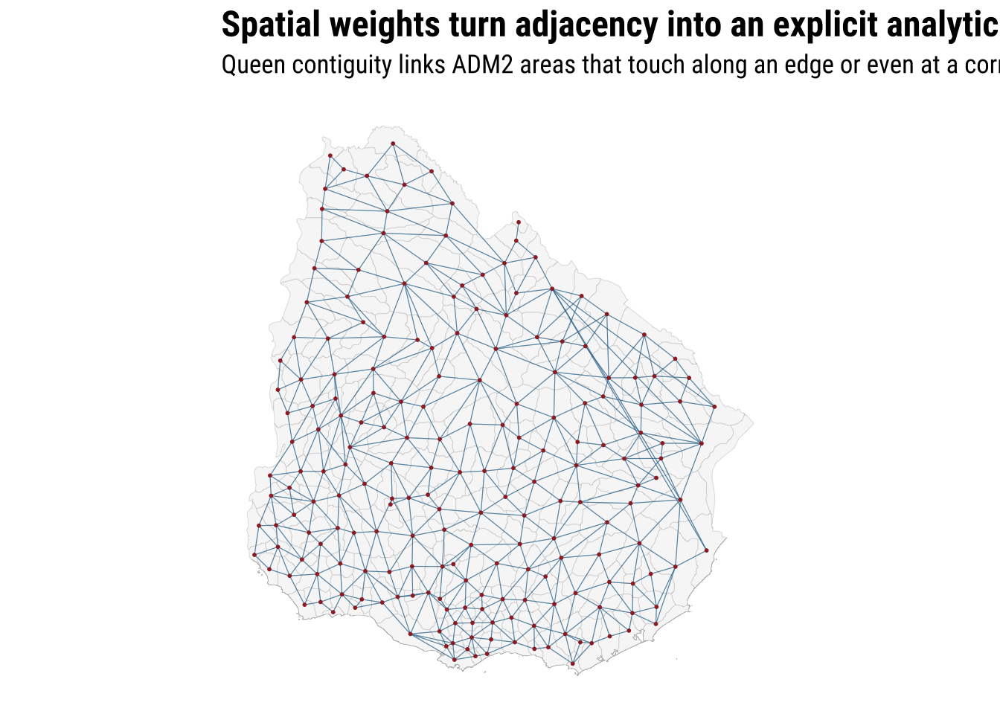
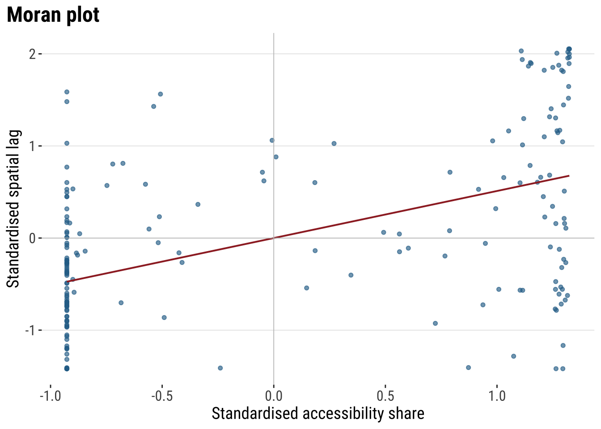
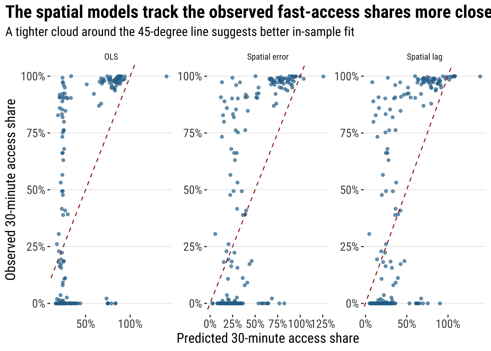
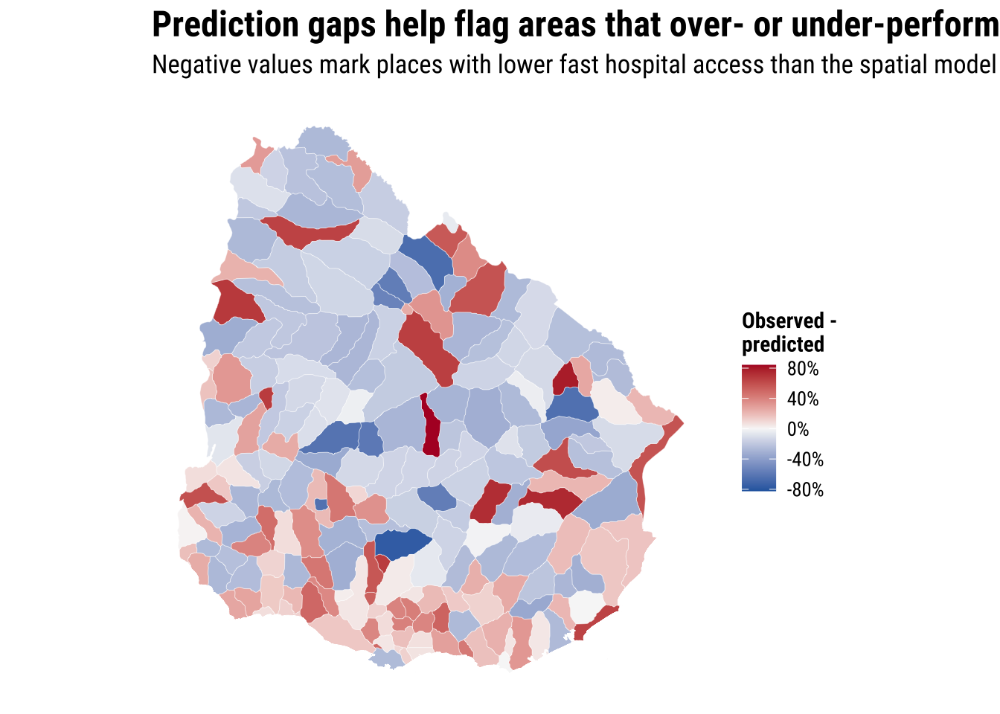

5 Spatial Dependence
5.1 Introduction / context and aims
This chapter introduces spatial dependence through a policy-relevant Uruguay example: the share of each ADM2 area’s wider hospital catchment that is reachable within 30 minutes. The raw count access_pop_hospitals_30min is heavily concentrated in Montevideo and the surrounding urban system, so it is not a very helpful main modelling outcome on its own. A share-based outcome gives us a better comparative question: once a population can reach hospital care within two hours, how much of that access is available within a faster 30-minute threshold?
That shift keeps the chapter close to the original course plan while making the analysis more meaningful across the whole country. Areas are not isolated containers. Fast hospital access in one municipality is shaped by nearby facilities, transport links, settlement structure, and the wider pattern of neighbouring areas. The aim is therefore to move from a familiar non-spatial regression to a spatial workflow that introduces weights, autocorrelation, and spatial regression in an applied and interpretable way.
5.2 Dependencies
5.3 Data description
The chapter combines the Uruguay ADM2 boundary file with three tables from the risk-indicator dataset family:
-
URY_ADM2_access.csvfor the ingredients used to construct the outcome -
URY_ADM2_rural_population.csvforrural_pop_perc -
URY_ADM2_facilities.csvforhospitals_count
The demographic file adds the elderly count used to construct elderly_share. The observation unit is an ADM2 area, not an individual or a point event. This matters because the chapter asks how fast hospital access varies across neighbouring areas and whether those area-level outcomes are spatially clustered.
# Read the official ADM2 boundary layer used for joins and neighbour links
adm2_boundaries <- st_read(
"data/boundaries/ury_adm_2020_shp/ury_admbnda_adm2_2020.shp",
quiet = TRUE
) |>
st_make_valid()
# Read the indicator tables needed for the chapter
access_tbl <- read_csv(
"data/risk-assessment-indicators/URY_ADM2_access.csv",
show_col_types = FALSE
)
rural_tbl <- read_csv(
"data/risk-assessment-indicators/URY_ADM2_rural_population.csv",
show_col_types = FALSE
)
facilities_tbl <- read_csv(
"data/risk-assessment-indicators/URY_ADM2_facilities.csv",
show_col_types = FALSE
)
demographics_tbl <- read_csv(
"data/risk-assessment-indicators/URY_ADM2_demographics.csv",
show_col_types = FALSE
)# Summarise the main files and variables before joining them
data_snapshot <- tibble(
dataset = c(
"ADM2 boundaries",
"Hospital access indicators",
"Rural population indicators",
"Facility counts",
"Demographic indicators"
),
rows = c(
nrow(adm2_boundaries),
nrow(access_tbl),
nrow(rural_tbl),
nrow(facilities_tbl),
nrow(demographics_tbl)
),
key_variable = c(
"ADM2_PCODE",
"hospital_access_30min_share",
"rural_pop_perc",
"hospitals_count",
"elderly"
)
)
data_snapshot# A tibble: 5 × 3
dataset rows key_variable
<chr> <int> <chr>
1 ADM2 boundaries 204 ADM2_PCODE
2 Hospital access indicators 204 hospital_access_30min_share
3 Rural population indicators 204 rural_pop_perc
4 Facility counts 204 hospitals_count
5 Demographic indicators 204 elderly The practical point is simple: all tables use the same administrative code, ADM2_PCODE. That gives us a clean path from tabular indicators to mapped areas and then to spatial weights.
5.4 Data wrangling
The main outcome in this revised version is:
hospital_access_30min_share = access_pop_hospitals_30min / access_pop_hospitals_2h
This keeps the chapter focused on hospital accessibility while avoiding an outcome that mostly reflects where the largest populations live. The chapter brief also asks us to use elderly_share, but the source data provide elderly as a count rather than as a ready-made share. Because the indicator bundle does not include an explicit total-population variable, we create a transparent proxy denominator from the available count fields and make that assumption explicit.
# Join the requested indicators and derive the share outcome and elderly share
risk_indicators <- access_tbl |>
select(
ADM2_PCODE,
access_pop_education_20km,
access_pop_hospitals_30min,
access_pop_hospitals_2h
) |>
left_join(
rural_tbl |>
select(ADM2_PCODE, rural_pop_perc),
by = "ADM2_PCODE"
) |>
left_join(
facilities_tbl |>
select(ADM2_PCODE, hospitals_count),
by = "ADM2_PCODE"
) |>
left_join(
demographics_tbl |>
select(ADM2_PCODE, elderly, female_pop, pop_u15),
by = "ADM2_PCODE"
) |>
mutate(
# Build the share outcome from the wider two-hour hospital catchment
hospital_access_30min_share = access_pop_hospitals_30min / pmax(access_pop_hospitals_2h, 1),
# Build a conservative population proxy from the counts available in the source bundle
population_proxy = pmax(
female_pop,
elderly,
pop_u15,
access_pop_hospitals_2h,
access_pop_education_20km,
na.rm = TRUE
),
# Convert the elderly count into a bounded share for the requested covariate
elderly_share = elderly / pmax(population_proxy, 1)
)
# Attach the indicators to the ADM2 geometries
adm2_risk <- adm2_boundaries |>
select(ADM1_ES, ADM1_PCODE, ADM2_ES, ADM2_PCODE, geometry) |>
left_join(risk_indicators, by = "ADM2_PCODE") |>
mutate(
hospital_access_30min_share = as.numeric(hospital_access_30min_share),
rural_pop_perc = as.numeric(rural_pop_perc),
hospitals_count = as.numeric(hospitals_count),
elderly_share = as.numeric(elderly_share)
) |>
filter(
!is.na(hospital_access_30min_share),
!is.na(rural_pop_perc),
!is.na(hospitals_count),
!is.na(elderly_share)
)
# Keep a projected copy for centroid calculations when needed later
adm2_risk_utm <- st_transform(adm2_risk, 32721)
adm2_centroids_utm <- st_point_on_surface(adm2_risk_utm)# Check the ranges of the outcome and the requested covariates
variable_summary <- adm2_risk |>
st_drop_geometry() |>
summarise(
across(
c(hospital_access_30min_share, rural_pop_perc, elderly_share, hospitals_count),
list(min = min, median = median, mean = mean, max = max),
na.rm = TRUE
)
) |>
pivot_longer(
everything(),
names_to = c("variable", ".value"),
names_sep = "_(?=[^_]+$)"
) |>
mutate(across(c(min, median, mean, max), round, 3))
variable_summary# A tibble: 4 × 5
variable min median mean max
<chr> <dbl> <dbl> <dbl> <dbl>
1 hospital_access_30min_share 0 0.16 0.412 1
2 rural_pop_perc 0 100 74.5 100
3 elderly_share 0 0.142 0.149 0.375
4 hospitals_count 0 0 0.647 40 At this point we have a clean area-level layer with geometry, the share outcome, and the three requested covariates. That is enough for descriptive analysis, a baseline linear model, and then the explicitly spatial extension.
5.5 Data exploration
We start with the outcome variable itself. A kernel histogram is useful here because it keeps the first step descriptive and familiar. It shows how many ADM2 areas convert very little of their wider two-hour hospital catchment into 30-minute access and how many convert most of it. In policy terms, the question is now more useful than before: where is fast hospital access relatively strong, given the wider hospital reach already available?
plot_access_distribution <- adm2_risk |>
st_drop_geometry() |>
ggplot(aes(x = hospital_access_30min_share)) +
# Show the frequency pattern of the share outcome across ADM2 areas
geom_histogram(
aes(y = after_stat(density)),
bins = 30,
fill = "grey85",
colour = "white",
linewidth = 0.2
) +
# Add a kernel density line to smooth the same distribution
geom_density(fill = "#2A6F97", alpha = 0.45, colour = "#2A6F97", linewidth = 0.5) +
scale_x_continuous(labels = label_percent(accuracy = 1)) +
labs(
title = "Fast hospital access varies sharply across Uruguay's ADM2 areas",
subtitle = "The outcome measures the share of each area's wider two-hour hospital catchment that is reachable within 30 minutes",
x = "Share of the two-hour hospital catchment reachable within 30 minutes",
y = "Density"
) +
theme_plot_course()
print(plot_access_distribution)
The distribution is still uneven, but it is no longer dominated by population size alone. Some ADM2 areas have very little short-travel hospital access even though they are part of a broader hospital catchment, while others convert most of that wider reach into much faster access. That is substantively useful because it shifts the emphasis from settlement size to relative accessibility performance.
map_access_outcome <- ggplot(adm2_risk) +
# Fill each ADM2 polygon by the fast-access share outcome
geom_sf(aes(fill = hospital_access_30min_share), colour = "white", linewidth = 0.08) +
scale_fill_course_seq_c(
name = "30-min\nshare",
labels = label_percent(accuracy = 1)
) +
labs(
title = "Fast hospital access remains spatially clustered across Uruguay",
subtitle = "Some areas convert most of their wider hospital catchment into short travel times, while others do not"
) +
theme_map_course()
print(map_access_outcome)
It also helps to look at the covariates before modelling. Rurality, older age structure, and the local count of hospitals are all plausible correlates of fast hospital access, but they may also cluster geographically.
exploration_long <- adm2_risk |>
st_drop_geometry() |>
select(ADM2_PCODE, rural_pop_perc, elderly_share, hospitals_count) |>
pivot_longer(
cols = c(rural_pop_perc, elderly_share, hospitals_count),
names_to = "variable",
values_to = "value"
)
plot_covariates <- ggplot(exploration_long, aes(x = value)) +
# Compare the covariate distributions with the same simple histogram template
geom_histogram(
bins = 25,
fill = "#9E2A2B",
colour = "white",
linewidth = 0.2
) +
facet_wrap(~variable, scales = "free_x") +
labs(
title = "The covariates also vary markedly across ADM2 areas",
subtitle = "That variation gives the baseline model something meaningful to explain",
x = "Value",
y = "ADM2 areas"
) +
theme_plot_course()
print(plot_covariates)
5.6 Baseline modelling
The baseline step is an ordinary linear regression. This is deliberate. Before introducing explicitly spatial models, we want a familiar benchmark that tells us what a non-spatial analysis would conclude if it ignored neighbour relationships.
# Fit the non-spatial baseline model required by the shared chapter template
ols_model <- lm(
hospital_access_30min_share ~ rural_pop_perc + elderly_share + hospitals_count,
data = adm2_risk |> st_drop_geometry()
)
# Tidy the coefficients for a compact teaching table
ols_coefficients <- tidy(ols_model, conf.int = TRUE) |>
mutate(
across(c(estimate, conf.low, conf.high), round, 3),
p.value = round(p.value, 4)
)
ols_coefficients# A tibble: 4 × 7
term estimate std.error statistic p.value conf.low conf.high
<chr> <dbl> <dbl> <dbl> <dbl> <dbl> <dbl>
1 (Intercept) 0.75 0.0844 8.88 0 0.583 0.916
2 rural_pop_perc -0.006 0.000682 -9.40 0 -0.008 -0.005
3 elderly_share 0.884 0.483 1.83 0.0688 -0.069 1.84
4 hospitals_count 0.013 0.00910 1.41 0.161 -0.005 0.031# Add fitted values and residuals back to the spatial layer for diagnostics
adm2_risk <- adm2_risk |>
mutate(
ols_fitted = fitted(ols_model),
ols_residual = resid(ols_model)
)
baseline_fit_summary <- glance(ols_model) |>
transmute(
r_squared = round(r.squared, 3),
adj_r_squared = round(adj.r.squared, 3),
sigma = round(sigma, 3),
aic = round(AIC(ols_model), 1)
)
baseline_fit_summary# A tibble: 1 × 4
r_squared adj_r_squared sigma aic
<dbl> <dbl> <dbl> <dbl>
1 0.362 0.353 0.357 165.The baseline model gives us a first explanatory story, but the main teaching question is whether it leaves a spatial pattern behind. If nearby residuals still resemble one another, then the non-spatial model is not fully capturing the spatial structure in the data.
plot_ols_residuals <- ggplot(adm2_risk) +
# Map residuals to see where the baseline model under- and over-predicts
geom_sf(aes(fill = ols_residual), colour = "white", linewidth = 0.08) +
scale_fill_course_div_c(
name = "OLS\nresidual",
labels = label_percent(accuracy = 1)
) +
labs(
title = "The baseline regression still leaves a visible spatial pattern",
subtitle = "Positive residuals show areas with higher fast-access shares than the non-spatial model predicts"
) +
theme_map_course()
print(plot_ols_residuals)
5.7 Spatial weights, autocorrelation, and spatial regression
The first explicitly spatial ingredient is a spatial weights matrix. In plain language, this is just a formal definition of who counts as a neighbour. Here we use a queen-contiguity rule, which treats ADM2 areas as neighbours when they share either a boundary segment or a corner.
A simple way to think about a spatial weights matrix is as a structured table of spatial relationships. Each row refers to one area, each column refers to another area, and each cell records whether those two areas are treated as connected and, if so, how strongly. In a basic contiguity matrix the entries often begin as 1 for neighbours and 0 for non-neighbours. After row standardisation, each area shares a total weight of 1 across its neighbours, so an area with two neighbours gives each a weight of 0.5, while an area with four neighbours gives each a weight of 0.25. This turns the intuitive idea of “nearby areas may matter” into something we can calculate with directly.
# Build a queen-contiguity neighbour structure from the ADM2 polygons
nb_queen <- poly2nb(adm2_risk, queen = TRUE)
# Convert the neighbour list into row-standardised weights
lw_queen <- nb2listw(nb_queen, style = "W", zero.policy = TRUE)
# Count how many neighbours each ADM2 area has
adm2_risk <- adm2_risk |>
mutate(n_neighbours = card(nb_queen))# Draw simple centroid-to-centroid links so the neighbour definition is visible
centroid_coords <- st_coordinates(adm2_centroids_utm)
nb_lines <- nb2lines(nb_queen, coords = centroid_coords, as_sf = TRUE)
nb_lines <- st_set_crs(nb_lines, st_crs(adm2_centroids_utm)) |>
st_transform(st_crs(adm2_risk))
map_neighbours <- ggplot() +
# Plot the polygons first as the base geography
geom_sf(data = adm2_risk, fill = "grey97", colour = "grey75", linewidth = 0.08) +
# Overlay neighbour links to show how the weights connect adjacent areas
geom_sf(data = nb_lines, colour = "#2A6F97", linewidth = 0.2, alpha = 0.5) +
geom_sf(data = st_transform(adm2_centroids_utm, st_crs(adm2_risk)), colour = "#9E2A2B", size = 0.35) +
labs(
title = "Spatial weights turn adjacency into an explicit analytical object",
subtitle = "Queen contiguity links ADM2 areas that touch along an edge or even at a corner"
) +
theme_map_course()
print(map_neighbours)
Once the weights are defined, we can test for spatial autocorrelation. Moran’s I asks whether similar values tend to occur near one another more than we would expect under spatial randomness. We calculate it twice: first for the outcome itself, then for the OLS residuals.
# Measure global spatial autocorrelation for the outcome and the OLS residuals
moran_outcome <- moran.test(
adm2_risk$hospital_access_30min_share,
lw_queen,
zero.policy = TRUE
)
moran_residuals <- moran.test(
adm2_risk$ols_residual,
lw_queen,
zero.policy = TRUE
)
moran_summary <- tibble(
series = c("Outcome", "OLS residuals"),
moran_i = c(
unname(moran_outcome$estimate[["Moran I statistic"]]),
unname(moran_residuals$estimate[["Moran I statistic"]])
),
expectation = c(
unname(moran_outcome$estimate[["Expectation"]]),
unname(moran_residuals$estimate[["Expectation"]])
),
p_value = c(moran_outcome$p.value, moran_residuals$p.value)
) |>
mutate(
across(c(moran_i, expectation), round, 3),
p_value = round(p_value, 4)
)
moran_summary# A tibble: 2 × 4
series moran_i expectation p_value
<chr> <dbl> <dbl> <dbl>
1 Outcome 0.329 -0.005 0
2 OLS residuals 0.236 -0.005 0# Add a local Moran classification so students can see where clustering happens
local_moran <- localmoran(
adm2_risk$hospital_access_30min_share,
lw_queen,
zero.policy = TRUE
)
lagged_outcome <- lag.listw(
lw_queen,
adm2_risk$hospital_access_30min_share,
zero.policy = TRUE
)
adm2_risk <- adm2_risk |>
mutate(
local_i = local_moran[, "Ii"],
local_p = local_moran[, "Pr(z != E(Ii))"],
outcome_centered = hospital_access_30min_share - mean(hospital_access_30min_share, na.rm = TRUE),
lag_centered = lagged_outcome - mean(lagged_outcome, na.rm = TRUE),
lisa_cluster = case_when(
local_p > 0.05 ~ "Not significant",
outcome_centered > 0 & lag_centered > 0 ~ "High-High",
outcome_centered < 0 & lag_centered < 0 ~ "Low-Low",
outcome_centered > 0 & lag_centered < 0 ~ "High-Low",
TRUE ~ "Low-High"
),
lisa_cluster = factor(
lisa_cluster,
levels = c("High-High", "Low-Low", "High-Low", "Low-High", "Not significant")
)
)map_lisa <- ggplot(adm2_risk) +
# Classify local clusters so the global autocorrelation result becomes spatially visible
geom_sf(aes(fill = lisa_cluster), colour = "white", linewidth = 0.08) +
scale_fill_manual(
values = c(
"High-High" = "#B2182B",
"Low-Low" = "#2166AC",
"High-Low" = "#EF8A62",
"Low-High" = "#67A9CF",
"Not significant" = "grey85"
),
drop = FALSE,
name = "Local cluster"
) +
labs(
title = "Local Moran clusters show where similar fast-access outcomes gather together",
subtitle = "High-High and Low-Low areas are especially useful because they suggest broader regional structures rather than isolated cases"
) +
theme_map_course()
print(map_lisa)
The global and local results motivate the next step. If the outcome and the OLS residuals are spatially correlated, we should consider models that incorporate that dependence directly rather than leaving it in the error term.
# Fit two standard spatial regression extensions using the same covariates
lag_model <- suppressWarnings(
lagsarlm(
hospital_access_30min_share ~ rural_pop_perc + elderly_share + hospitals_count,
data = adm2_risk,
listw = lw_queen,
zero.policy = TRUE
)
)
error_model <- suppressWarnings(
errorsarlm(
hospital_access_30min_share ~ rural_pop_perc + elderly_share + hospitals_count,
data = adm2_risk,
listw = lw_queen,
zero.policy = TRUE
)
)5.7.1 Statistical inference and interpretation
The first inferential question is whether the relationships remain similar once spatial dependence is included directly in the model. That is why it is helpful to compare the OLS coefficients with the spatial lag and spatial error results rather than treating the spatial models as a completely separate exercise.
# Compare the main coefficients across the baseline and spatial models
lag_coef <- as_tibble(summary(lag_model)$Coef, rownames = "term") |>
transmute(
model = "Spatial lag",
term,
estimate = Estimate,
p_value = `Pr(>|z|)`
)
error_coef <- as_tibble(summary(error_model)$Coef, rownames = "term") |>
transmute(
model = "Spatial error",
term,
estimate = Estimate,
p_value = `Pr(>|z|)`
)
coef_table <- bind_rows(
tidy(ols_model) |>
transmute(model = "OLS", term, estimate, p_value = p.value),
lag_coef,
error_coef
) |>
mutate(
estimate = round(estimate, 3),
p_value = round(p_value, 4)
)
coef_table# A tibble: 12 × 4
model term estimate p_value
<chr> <chr> <dbl> <dbl>
1 OLS (Intercept) 0.75 0
2 OLS rural_pop_perc -0.006 0
3 OLS elderly_share 0.884 0.0688
4 OLS hospitals_count 0.013 0.161
5 Spatial lag (Intercept) 0.527 0
6 Spatial lag rural_pop_perc -0.006 0
7 Spatial lag elderly_share 0.85 0.0495
8 Spatial lag hospitals_count 0.007 0.378
9 Spatial error (Intercept) 0.664 0
10 Spatial error rural_pop_perc -0.006 0
11 Spatial error elderly_share 1.05 0.0244
12 Spatial error hospitals_count 0.007 0.401 # A tibble: 2 × 3
model parameter estimate
<chr> <chr> <dbl>
1 Spatial lag rho 0.437
2 Spatial error lambda 0.492In this share-based version, hospitals_count is easier to interpret than before. A positive coefficient means that additional hospitals are associated with a larger share of the broader hospital catchment being reachable within 30 minutes, not just with higher population totals. rural_pop_perc and elderly_share should still be read more cautiously, especially because elderly_share depends on a derived denominator.
The spatial parameters matter too. In the spatial lag model, rho captures the extent to which fast access in one ADM2 is associated with fast access in neighbouring ADM2 areas. In the spatial error model, lambda captures spatial dependence in the remaining unexplained component.
5.7.2 Model assessment
Once we fit the spatial models, we should check whether they actually improve on the baseline model. If a spatial model is worthwhile, it should usually do at least one of two things: fit the data better and leave less spatial structure in the residuals.
# Generate fitted values and residuals for model comparison
adm2_risk <- adm2_risk |>
mutate(
lag_fitted = as.numeric(fitted(lag_model)),
lag_residual = hospital_access_30min_share - lag_fitted,
error_fitted = as.numeric(fitted(error_model)),
error_residual = as.numeric(residuals(error_model))
)
# Compare fit and remaining residual autocorrelation across models
model_fit_compare <- tibble(
model = c("OLS", "Spatial lag", "Spatial error"),
aic = c(AIC(ols_model), AIC(lag_model), AIC(error_model)),
fit_r2 = c(
summary(ols_model)$r.squared,
cor(adm2_risk$hospital_access_30min_share, adm2_risk$lag_fitted)^2,
cor(adm2_risk$hospital_access_30min_share, adm2_risk$error_fitted)^2
),
rmse = c(
sqrt(mean(adm2_risk$ols_residual^2, na.rm = TRUE)),
sqrt(mean(adm2_risk$lag_residual^2, na.rm = TRUE)),
sqrt(mean(adm2_risk$error_residual^2, na.rm = TRUE))
),
prediction_correlation = c(
cor(adm2_risk$hospital_access_30min_share, adm2_risk$ols_fitted),
cor(adm2_risk$hospital_access_30min_share, adm2_risk$lag_fitted),
cor(adm2_risk$hospital_access_30min_share, adm2_risk$error_fitted)
),
residual_moran_i = c(
unname(moran.test(adm2_risk$ols_residual, lw_queen, zero.policy = TRUE)$estimate[["Moran I statistic"]]),
unname(moran.test(adm2_risk$lag_residual, lw_queen, zero.policy = TRUE)$estimate[["Moran I statistic"]]),
unname(moran.test(adm2_risk$error_residual, lw_queen, zero.policy = TRUE)$estimate[["Moran I statistic"]])
),
residual_moran_p = c(
moran.test(adm2_risk$ols_residual, lw_queen, zero.policy = TRUE)$p.value,
moran.test(adm2_risk$lag_residual, lw_queen, zero.policy = TRUE)$p.value,
moran.test(adm2_risk$error_residual, lw_queen, zero.policy = TRUE)$p.value
)
) |>
mutate(
aic = round(aic, 1),
fit_r2 = round(fit_r2, 3),
rmse = round(rmse, 3),
prediction_correlation = round(prediction_correlation, 3),
residual_moran_i = round(residual_moran_i, 3),
residual_moran_p = round(residual_moran_p, 4)
)
model_fit_compare# A tibble: 3 × 7
model aic fit_r2 rmse prediction_correlation residual_moran_i
<chr> <dbl> <dbl> <dbl> <dbl> <dbl>
1 OLS 165. 0.362 0.354 0.602 0.236
2 Spatial lag 133. 0.482 0.319 0.694 -0.032
3 Spatial error 140 0.476 0.323 0.69 -0.016
# ℹ 1 more variable: residual_moran_p <dbl>plot_predicted_vs_observed <- adm2_risk |>
st_drop_geometry() |>
select(
observed = hospital_access_30min_share,
OLS = ols_fitted,
`Spatial lag` = lag_fitted,
`Spatial error` = error_fitted
) |>
pivot_longer(
cols = c(OLS, `Spatial lag`, `Spatial error`),
names_to = "model",
values_to = "predicted"
) |>
ggplot(aes(x = predicted, y = observed)) +
# Compare fitted and observed values with the same reference line in each panel
geom_point(colour = "#2A6F97", alpha = 0.65, size = 1.2) +
geom_abline(intercept = 0, slope = 1, colour = "#9E2A2B", linetype = "dashed") +
facet_wrap(~model, scales = "free") +
scale_x_continuous(labels = label_percent(accuracy = 1)) +
scale_y_continuous(labels = label_percent(accuracy = 1)) +
labs(
title = "The spatial models track the observed fast-access shares more closely",
subtitle = "A tighter cloud around the 45-degree line suggests better in-sample fit",
x = "Predicted 30-minute access share",
y = "Observed 30-minute access share"
) +
theme_plot_course()
print(plot_predicted_vs_observed)
These diagnostics make the modelling logic more concrete. AIC tells us whether the extra spatial structure is improving fit enough to justify the added complexity, while the fit_r2 column gives a simple summary of how closely each model tracks the observed outcome. RMSE keeps the assessment in the outcome’s own units, and residual Moran’s I checks whether spatial structure is still left behind after modelling. If a spatial model is doing useful work, we would usually expect lower AIC, lower RMSE, a stronger fit measure, and less residual spatial autocorrelation than the plain OLS benchmark.
5.7.3 Model prediction in practice
Prediction does not always mean forecasting the future. In applied spatial policy work it often means using a fitted model to estimate what level of fast accessibility we would expect in each area, given its observed characteristics and its wider spatial context. That creates a practical benchmark: which places are doing better or worse than the model would lead us to expect?
Here we use the spatial error model as a working model because it often performs well when residual dependence remains important. We compare the model’s fitted values with the observed outcome and look for large negative gaps, meaning areas whose realised fast-access share is lower than the model would predict.
# Use the selected spatial model to identify areas that underperform relative to expectations
prediction_gap_table <- adm2_risk |>
st_drop_geometry() |>
transmute(
ADM1_ES,
ADM2_ES,
observed_share = hospital_access_30min_share,
predicted_share = error_fitted,
prediction_gap = observed_share - predicted_share
) |>
arrange(prediction_gap) |>
slice_head(n = 10) |>
mutate(
across(c(observed_share, predicted_share, prediction_gap), round, 3)
)
prediction_gap_table ADM1_ES ADM2_ES observed_share predicted_share prediction_gap
1 Treinta y Tres n.a108 0.000 0.824 -0.824
2 Florida n.a135 0.000 0.769 -0.769
3 Rivera n.a16 0.021 0.686 -0.665
4 Cerro Largo n.a67 0.000 0.647 -0.647
5 Flores n.a118 0.000 0.638 -0.638
6 Durazno n.a79 0.000 0.627 -0.627
7 Durazno n.a81 0.000 0.600 -0.600
8 Tacuarembó n.a24 0.000 0.575 -0.575
9 Florida n.a113 0.000 0.573 -0.573
10 Tacuarembó n.a29 0.000 0.537 -0.537map_prediction_gap <- ggplot(adm2_risk) +
# Map the gap between observed and predicted fast access
geom_sf(aes(fill = hospital_access_30min_share - error_fitted), colour = "white", linewidth = 0.08) +
scale_fill_course_div_c(
name = "Observed -\npredicted",
labels = label_percent(accuracy = 1)
) +
labs(
title = "Prediction gaps help flag areas that over- or under-perform",
subtitle = "Negative values mark places with lower fast hospital access than the spatial model would expect"
) +
theme_map_course()
print(map_prediction_gap)
This kind of prediction is useful because it gives policy teams a first-screening tool. Areas with large negative gaps may deserve closer investigation: perhaps road connectivity, river crossings, facility concentration in neighbouring municipalities, or institutional barriers are limiting short-travel access more than the simple covariate set suggests.
5.7.4 What changed, assumptions, and remaining gaps
This chapter now uses a share-based hospital accessibility outcome rather than the raw count in the earlier draft. That makes the chapter much better aligned with the substantive goal of teaching spatial dependence rather than simply reproducing Montevideo’s population concentration. The rest of the workflow remains the same: descriptive kernel histogram, baseline OLS, spatial weights, Moran’s I, spatial regression, model assessment, and practical prediction.
The main assumption is still elderly_share. The source bundle provides elderly as a count rather than as a ready-made share, so the chapter constructs a conservative population proxy from the available count variables and makes that step explicit in both code and text.
The main remaining gap is that the outcome is a relative accessibility share within the observed hospital-access system, not a full share of total population. If a cleaner total-population field becomes available later, both this chapter and 06-spatial-heterogeneity.qmd could be updated again so the accessibility outcome and elderly_share are anchored to an explicit population denominator.